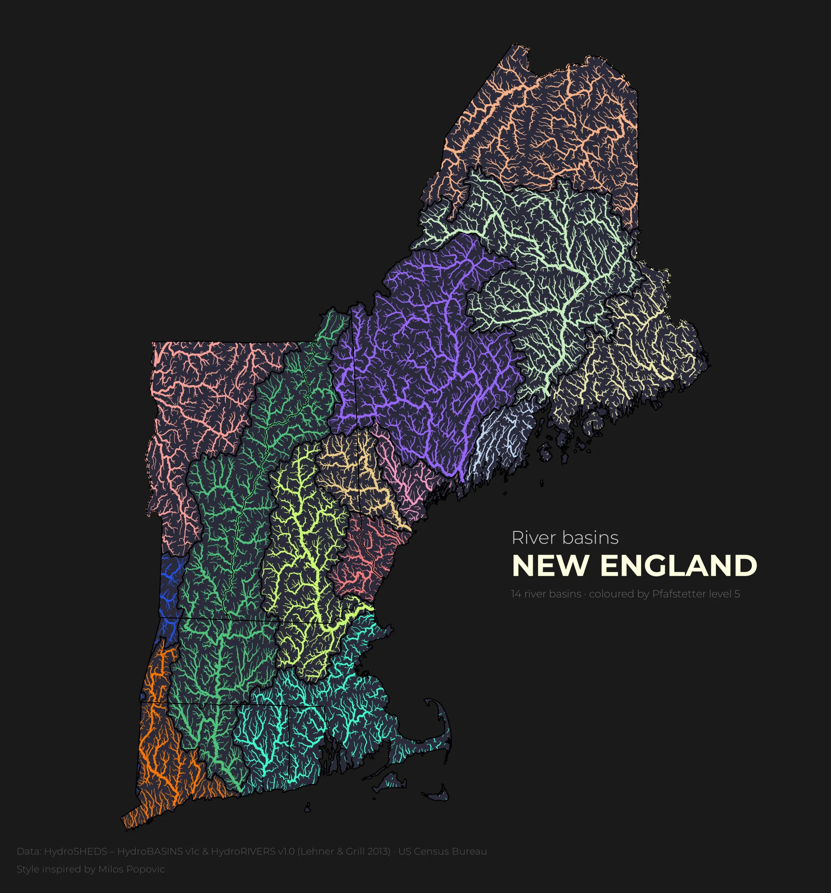
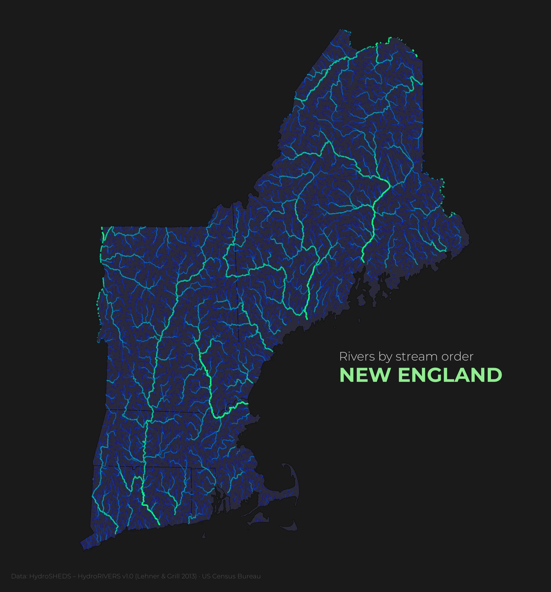

Maps
SHEET 05 / 06New England's rivers, drawn in Python.
A small atlas I'm building while I learn Python: one region, redrawn plate by plate from open hydrology data.
01 / 03
The ground
Six states, one river network. Maine, New Hampshire, Vermont, Massachusetts, Rhode Island and Connecticut are drawn as a single piece of ground.

02 / 03
The data
Everything here is open data. The rivers and the basins come from HydroSHEDS, and the state lines from the US Census Bureau.
- Rivers
- HydroRIVERS v1.0
- Basins
- HydroBASINS v1c, Pfafstetter level 5
- Borders
- US Census Bureau cartographic boundaries
03 / 03
The method
Each map is a Python notebook: load the layers, clip them to the six states, and style the rivers by one column. I am a beginner, and every plate teaches me one new step.

The atlas
Two plates so far. Pick one in the index, then drag the divider to compare it with the plate underneath.